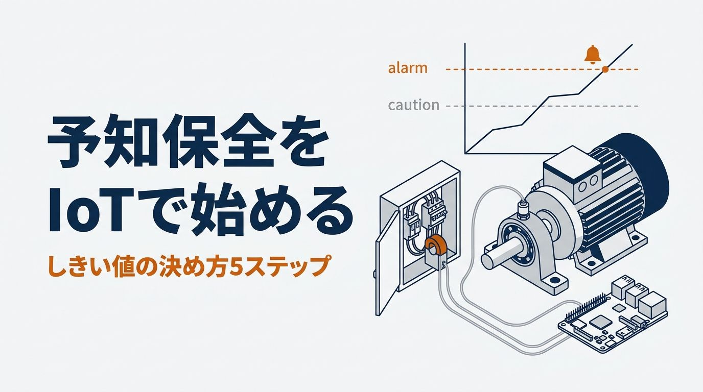
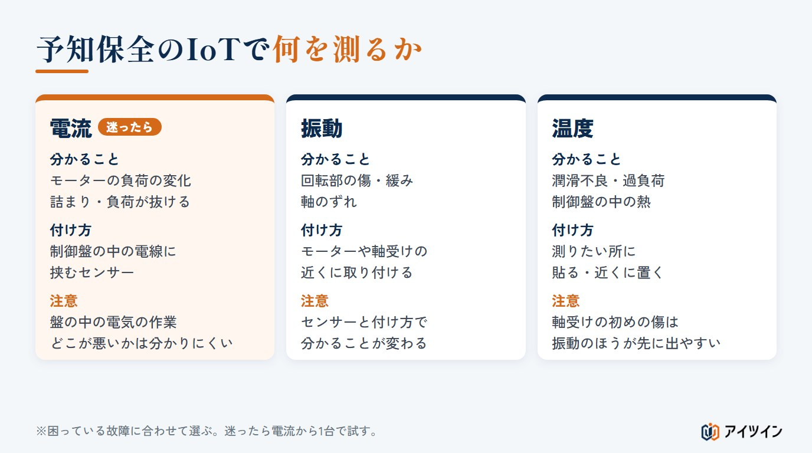
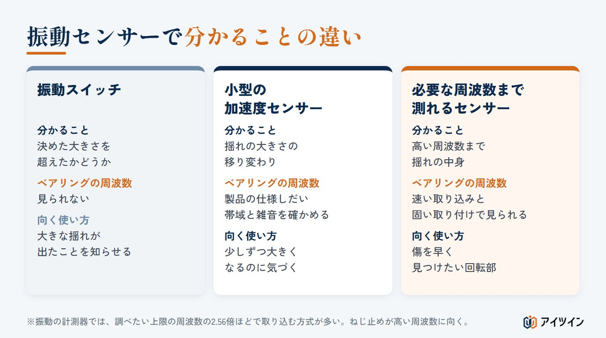
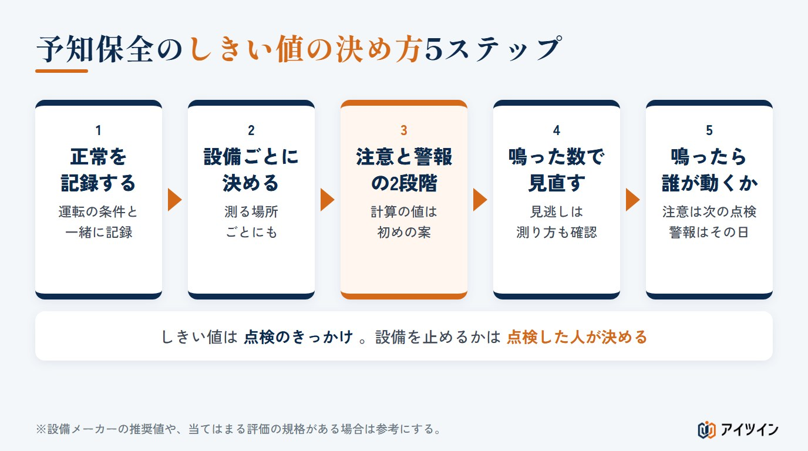

「予知保全をIoTで始めたいが、何から手を付ければよいのか分からない」「センサーを付けたものの、どこでアラームを鳴らせばよいのか決められない」。予知保全とIoTを調べると、仕組みの説明や、大きな会社の導入事例が多く見つかります。一方で、中小の工場が自分たちで小さく始めるときに困る、何を測るか、どのセンサーなら何が分かるか、しきい値をどう決めるかは、あまり書かれていません。
本記事では、予知保全をIoTで始める方法を、測るものの選び方、振動センサーの選び方、しきい値の決め方5ステップの順に整理します。後半では、振動でベアリングの傷を見つけた実例と、漏れ電流で漏電ブレーカーが落ちる原因を探した実例、そして解析のツールをAIに作ってもらう進め方をご紹介します。正常なときの値から、しきい値の初めの案を出すツールも付けました。
この記事でわかること
- 予知保全のIoTで測る電流・振動・温度の違いと、選び方
- ベアリングの周波数まで見られる振動センサーと、見られない振動センサーの違い
- しきい値の決め方5ステップと、初めの案を出すツール
- 振動と漏れ電流の実例と、ラズパイを使った構成例
- 解析のツールをAIに作ってもらうときの頼み方
予知保全をIoTで始めるときは「何を測るか」から
予知保全とIoTの関係
予知保全は、設備の状態を測り続け、壊れる前の変化をとらえて手を打つ保全です。IoTは、そのためにセンサーの値を集め、記録し、知らせる仕組みを指します。事後保全や予防保全とどう違うか、どの設備から始めるかの選び方は、コラム「設備の故障を減らす保全の進め方」で詳しく紹介しています。本記事では、IoTでどう始めるかに絞ってお話しします。

電流・振動・温度のメリット・デメリット比較一覧
予知保全のIoTでよく測るのは、電流・振動・温度の3つです。分かること、付け方、よい点、気をつけたい点を並べると、次のようになります。
| 測るもの | 分かること | 付け方 | よい点 | 気をつけたい点 |
|---|---|---|---|---|
| 電流 | モーターの負荷の変化（詰まり・重くなる・負荷が抜けるなど。電流は増える場合も減る場合もある） | 制御盤の中の電線に、挟むセンサーを付ける | 機械本体に手を加えずに測れる場合がある | 盤の中の電気の作業になる。インバーターで動かすモーターは電流の出方が変わる。どこが悪いかまでは分かりにくい |
| 振動 | 回転部の傷・緩み・軸のずれ・回転のかたより | モーターや軸受けの近くに取り付ける | ベアリングの傷の初めのうちに気づける場合がある | センサーと取り付け方で、分かることが大きく変わる。振動が増えただけでは原因は決まらない |
| 温度 | 軸受けの潤滑不良・過負荷・制御盤の中の熱 | 測りたい所に貼る、近くに置く | 安く始められ、仕組みが分かりやすい | 転がり軸受けの疲れによる初めの傷は、温度より先に振動に出ることが多い |
困っている故障で選ぶ｜迷ったら電流から
何を測るかは、どの故障を早く見つけたいかで決めます。モーターの負荷の変化や詰まりを知りたいなら電流、ベアリングの傷を早く見つけたいなら振動、潤滑不良や発熱を見たいなら温度が候補です（熱については、特集の記事「制御盤の熱対策」もご覧ください）。どれから始めるか迷ったら、制御盤の中で測れて変化が分かりやすい電流から1台で試し、早く見つけたい回転部がある設備にだけ振動を足す、という進め方がおすすめです。
この章のまとめ
- 予知保全のIoTでよく測るのは、電流・振動・温度の3つ
- 電流は負荷の変化、振動は回転部の傷、温度は潤滑不良や発熱に向く
- 困っている故障で選ぶ。迷ったら電流から1台で試す
予知保全のIoTに使う振動センサーの選び方

振動センサーで分かることは、種類によって違う
ひとくちに振動センサーといっても、分かることは種類によって大きく違います。どの振動センサーでも、ベアリングの周波数を調べられるわけではありません。ラズパイでよく使われるものを含めて、大きく3つに分けると、次のようになります。
- 振動スイッチ：決めた大きさを超えたときに、オンとオフなどの合図を出す部品です。一定以上の揺れが出たことを知らせるのには使えますが、一般的なものは揺れの形を測り続けるものではないため、周波数を調べてベアリングの傷を見つける使い方には向きません。
- 小型の加速度センサー：揺れの大きさを数字で測れる、小さな部品です。揺れの大きさの移り変わりを記録して、「少しずつ大きくなっている」に気づくのに使えます。測れる周波数の範囲や、細かい揺れが雑音に埋もれないかは製品によって違うため、ベアリングの傷を調べたいときは、必要な周波数まで測れるか、雑音はどのくらいかを仕様書で確かめます。
- 必要な周波数まで測れる加速度センサーと、速く取り込む回路の組み合わせ：調べたい周波数の範囲に合ったセンサーと、値を十分な速さと細かさで取り込む回路を組み合わせたものです。ベアリングの周波数を調べるには、この組み合わせが要ります。センサーの方式によっては、専用の電源や信号を整える回路も必要です。費用は、測りたい周波数や精度で大きく変わります。
ベアリングの傷は「通る周波数」と「高い周波数の衝撃」で見る
ベアリングに傷ができると、玉（転動体）が傷を通るたびに小さな衝撃が出て、ベアリングの寸法と回転の速さで決まる特有の周波数の振動が出ることがあります。外輪の傷、内輪の傷、玉の傷、玉を支える保持器の異常で、それぞれ周波数が違い、計算で求められます（実際には、すべりなどで計算の値から少しずれることがあります）。この周波数そのものは、ふつうの回転の速さなら、数十〜数百Hzほどのことも多くあります。
一方で、傷の初めのうちは、玉が傷を通るときの小さな衝撃が、軸受けや機械の高い周波数（数kHz以上）の揺れを起こすことがあります。この高い周波数の揺れを測り、包絡線解析（エンベロープ解析）などで処理すると、傷が通る周波数を見つけやすくなります。そのため、ベアリングの傷を早く見つけたい場合は、傷が通る周波数だけでなく、衝撃を捉える高い周波数まで測れることが必要になります。
測る速さは、調べたい周波数の範囲で決める
1秒間に何回測るか（サンプリング周波数）は、調べたい周波数の範囲で決めます。理屈のうえでは、調べたい周波数の2倍より速く測る必要があります。実際には、測る前に高すぎる周波数を取り除くフィルターの性能も考え、振動の計測器では、調べたい上限の周波数の2.56倍ほどの速さで取り込む方式がよく使われます。どの計測でも2.56倍でよいわけではなく、使う回路とフィルターに合わせて決めます。
ラズパイだけに速く途切れない取り込みを任せると、組み方によっては速さや安定が足りないことがあります。そこで、取り込みは専用の計測回路に任せ、ラズパイは受け取ったまとまりの値を計算し、記録する構成にします。速さだけでなく、途中で値が抜けていないか、時刻が正しいかも確かめます。
取り付け方でも、測れる周波数が変わる
同じセンサーでも、取り付け方で測れる高い周波数の範囲が変わります。一般に、平らな面にねじでしっかり止める方法が、高い周波数を測るのに向いています。磁石や両面テープで付ける方法は手軽ですが、付ける部分の硬さや材質によって、高い周波数が伝わりにくくなることがあるため、測りたい周波数に足りるかを確かめます。測る向き（上下・左右・軸の向き）と、センサーの位置も、記録の途中で変えないようにします。付ける場所と付け方を変えると、正常なときの値も変わるためです。
この章のまとめ
- 振動スイッチは、決めた大きさを超えたことを知らせるだけ。周波数は調べられない
- 小型の加速度センサーは、揺れの大きさの移り変わりに使える。周波数は仕様しだい
- ベアリングの傷を見るには、高い周波数まで測れるセンサー・速い取り込み・固い取り付けが要る
ラズパイで作る予知保全のIoTの構成例
ここからは、ラズパイを使った予知保全のIoTの構成例です。筆者がラズパイで作って動かしたものではなく、特集でご紹介してきた作り方で組める形として整理しています。
電流を測る構成｜挟むセンサーと、アナログの値を読む回路
モーターにつながる電線のうち、測りたい1本だけを、挟んで電流を測るセンサー（変流器）で挟みます。何本もまとめて挟むと、電流どうしが打ち消し合い、正しく測れません。三相のモーターで、相ごとのかたよりまで見たい場合は、それぞれの相を測ります。この方式は、ふつう交流の電流を測るもので、直流を測りたいときは別の方式のセンサーを選びます。
ラズパイにはアナログの値を読む端子がないため、センサーの出す電圧を数字に変える回路（AD変換の回路）を間に入れ、ラズパイで1秒ごとなどに読み取って記録します。センサーには、電圧で出力する型と、電流で出力する型があり、仕様書で確かめます。電流で出力する型は、電線に電流が流れているときに出力の線を開いたままにすると、危険な電圧が出ることがあります。センサーの定格の電流、絶縁の性能、挟める電線の太さも確かめ、むき出しの電線には取り付けません。取り付けは、電気の資格と知識のある人が、止めてよいときに、決まった安全の手順で行います。
振動を測る構成｜取り込みは専用の回路に任せる
揺れの大きさの移り変わりを見るだけなら、加速度センサーをラズパイにつなぎ、一定の間隔で記録します。ベアリングの周波数まで調べたい場合は、前の章のとおり、必要な周波数まで測れるセンサーと速く取り込む回路を使い、ラズパイは取り込んだ値をまとめて計算し、結果を記録します。生の揺れの値をすべて残すと記録が大きくなりすぎるため、ふだんは計算した結果だけを残し、しきい値を超えたときだけ生の値を残すようにします。
設備は止めない｜知らせるだけにする
特集のほかの記事と同じく、この仕組みは、設備の状態を記録して点検を知らせるための補助の仕組みで、設備を止めず、知らせるだけにします。しきい値を超えたら、画面やランプで知らせ、記録を残します。設備を止めるかどうかは、知らせを受けた人が、点検をしてから決めます。非常停止、扉のインターロック、過負荷の保護など、安全に関わる働きは、もとの設備の回路に任せ、ラズパイの動きや通信に頼らせません。導入するときは、ラズパイが壊れたり、止まったり、通信が切れたりしても、設備のふだんの運転と安全の働きに影響しないことを確かめます。
費用の目安
電流を1か所測る小さな構成なら、ラズパイ、電流のセンサー、AD変換の回路、ケース、電源などを組み合わせて、数万円ほどから試作できる場合があります（ラズパイは2026年に値上がりしているため、買う時点の値段を確かめます）。ただし、センサーの仕様、盤の中の作業、取り付け方で費用は変わり、実際の費用は、測る条件と安全の対策を確かめてから見積もります。振動でベアリングの周波数まで調べる構成は、センサーと取り込みの回路で費用が大きく上がります。まずは電流や揺れの大きさで小さく始め、効果が見えてから周波数の解析に進むのがおすすめです。
この章のまとめ
- 電流は、測りたい1本だけを挟み、AD変換の回路でラズパイに読み込む
- 電流で出力するセンサーは、出力の線を開いたままにしない。取り付けは資格のある人が行う
- ラズパイは補助の仕組み。止まっても設備と安全の働きに影響しないようにする
予知保全のしきい値の決め方5ステップ

ステップ1｜運転の条件ごとに、正常なときを記録する
しきい値を決める前に、まず正常なときの値を記録します。品種の切り替え、負荷の大小、回転の速さ、朝と昼、夏と冬で値は変わるため、できるだけいろいろな運転の状態を含めます。あわせて、回転の速さ、負荷、運転か停止か、品種も一緒に記録します。条件の違う値をひとまとめにすると、正常なときのばらつきが大きくなり、異常を見つけにくくなるため、正常な値が条件で大きく変わる設備では、条件ごとに分けてしきい値を決めます。
ステップ2｜設備ごと・測る場所ごとに決める
同じ型の設備でも、据え付けの状態や使われ方で値は違います。しきい値は、設備ごと、測る場所ごとに決めます。設備メーカーの推奨値や、対象の機械に当てはまる振動の評価の規格（ISO 20816 など）がある場合は参考にし、自分の設備の正常な値と見比べて決めます。ただし、この規格は機械の種類や測る条件で当てはまる範囲が違い、揺れ全体の大きさを評価するものです。ベアリングの傷を周波数で調べる方法とは評価のしかたが違うため、目的に合わせて使い分けます。
ステップ3｜注意と警報の2段階にする
しきい値は1つではなく、注意と警報の2段階にします。注意は「点検の予定を立てる」段階、警報は「早めに点検する」段階です。初めの案を作る方法のひとつに、正常なときの平均に、ばらつき（標準偏差）の何倍か（たとえば3倍や6倍）を足す方法があります。ただし、振動や電流の値はきれいな山の形に分かれないことも多く、1秒ごとの値は前の値と似やすいため、誤報の出る割合が、統計の教科書どおりになるとは限りません。この方法で出すのは初めの案で、点検の結果と照らし合わせて直していきます。また、電流は、詰まりで上がるだけでなく、負荷が抜けると下がることもあるため、見たい故障に合わせて上と下の両方にしきい値を置くことも考えます。
ステップ4｜鳴った回数と見逃しで見直す
しきい値を決めたら、しばらく運用して、鳴った回数と点検の結果を記録します。正常なのに鳴る（誤報）が多いと、だれもアラームを見なくなります。1回だけの飛び値で鳴らさないように、一定の時間、または何回か続けて超えたら鳴らすようにするのも効果があります。ただし、続けて超えるのを待つ分だけ知らせが遅れ、短い時間だけ起きる異常を見逃すこともあるため、回数や時間は設備に合わせて決めます。大きく飛び出した値は、回数を待たずに別に知らせる方法もあります。
逆に、壊れたのに鳴らなかった（見逃し）場合は、すぐにしきい値を下げるのではなく、まずセンサーの位置、測れる周波数、運転の条件、解析のしかたが、その故障に合っていたかを確かめます。そのうえで、しきい値や測り方を見直します。しきい値を変えたときは、変えた日、変える前と後の値、理由を記録に残します。
ステップ5｜鳴ったら誰が何をするかを決める
アラームが鳴っても、だれが何をするかが決まっていなければ、壊れる前に手を打てません。注意なら保全の担当者が次の点検で確かめる、警報ならその日のうちに見に行く、どの条件で設備を止めるかはだれが判断する、のように、鳴ったあとの動きを先に決めておきます。点検した結果も記録に残し、ステップ4の見直しに使います。
しきい値の初めの案を出すツール
正常なときの値を入れると、注意と警報のしきい値の初めの案と、確かめたい値で何回鳴るかを数えます。倍率、上だけか上と下の両方か、続けて超えた回数を変えて、誤報と見逃しのバランスを試してみてください。
しきい値の初めの案を出すツール｜正常なときの値から、注意と警報の値と鳴る回数を見る
正常なときに記録した値（振動の大きさ、電流など。単位はそろえてあれば何でも構いません）を貼り付けると、平均とばらつきから注意と警報のしきい値の初めの案を出します（運転の条件で値が変わる設備は、条件ごとに分けて入れてください）。「確かめたい値」に最近の記録を貼ると、そのしきい値でアラームが何回鳴っていたかと、初めて鳴ったのは何番目の値かを数えます。数字は空白・改行・カンマのどれで区切っても読めます。入れた内容は、このページの中だけで計算し、どこにも送りません。はじめは、途中から振動がじわじわ大きくなっていく例です。
正常なときの値（20個以上が目安）
どちらに外れたら鳴らすか（電流は、負荷が抜けて下がることもある）
何回続けて超えたら鳴らすか（1回だけの飛び値で鳴らさないため）
確かめたい値（最近の記録。古い順）
結果
| 正常なときの平均／ばらつき | ／（個） |
|---|---|
| 注意のしきい値 | |
| 警報のしきい値 | |
| 正常なときの値で、注意が鳴る回数 | 回 |
| 確かめたい値で、注意が鳴る回数 | 回 |
| 確かめたい値で、警報が鳴る回数 | 回 |
この章のまとめ
- 正常なときの値を、運転の条件と一緒に、条件ごとに分けて記録する
- 平均＋ばらつきの何倍かは初めの案。注意と警報の2段階で、電流は下側も考える
- 見逃しは測り方から確かめ、変更の履歴と、鳴ったあとの動きを決めておく
予知保全のIoTの事例｜振動と漏れ電流の実例
ここからは、筆者が保全の現場で経験したことです。どちらもラズパイではなく、市販の計測器を使った例ですが、何を測り、どう判断したかは、ラズパイで仕組みを作るときにもそのまま使えます。
実例1｜振動の周波数でベアリングの傷を見つけ、精度に出る前に点検した
ミクロン単位の精度が求められる設備では、ベアリングのわずかな傷が、そのまま製品の精度に表れます。そこで、市販の振動センサーでデータを取り、周波数ごとに分けて調べて、ベアリングの傷から出る振動を捉えました。その後、同じ設備すべてで正常なときの振動を記録し、設備ごとにしきい値を決め、超えたら点検のアラームが出るようにしました。アラームが出た時点で点検と精度の確認を行う流れが定着し、精度に影響が出る前に手を打てるようになりました。くわしくは「設備の故障を減らす保全の進め方」で紹介しています。
実例2｜漏電ブレーカーが落ちる原因を、漏れ電流と設備の動きで絞ろうとした
ある設備で、センサーの絶縁が傷んだことが疑われ、設備の漏電ブレーカー（漏電遮断器）が落ちることがありました。困ったのは、どの動きのときに落ちるのかが分からないことです。配線を1本ずつ外して原因を絞ろうにも、設備が動いていないと不具合が起きないため、特定できません。
そこで、設備のアースの線（保護接地線）に、漏れ電流を測るクランプメーターを付け、そこを流れる電流と設備の動き（サイクル）を見比べることにしました。どの動きのときに電流が増えるかが分かれば、その動きで使うセンサーに絞れるからです。実際には、測定で特定する前に、傷んだセンサーが見つかったため、この方法で特定するところまでは確かめられませんでした。それでも、動いているときにしか起きない不具合を、動きと電流を並べて絞る考え方は、ほかの設備でも使えると考えています。
なお、アースの線だけを挟む方法で測れるのは、その線を流れる電流です。漏れた電流は、機械の金属の枠やケーブルの覆いなど、ほかの道を通ることもあり、設備全体の漏れ電流と同じになるとは限りません。回路全体から漏れた電流を測るには、その回路の電気が流れる線（単相なら2本、三相なら3本、中性線があればそれも）をまとめて挟み、アースの線は挟みません。
測るときは、アースの線を外したり切ったりしない、測るために漏電ブレーカーを効かなくしない、使う測定器が電圧と場所に合っているかを確かめる、が基本です。インバーターなどを含む設備では、漏れ電流に高い周波数が含まれることがあるため、測定器がそれに対応しているかも確かめます。測った値だけで漏電の場所を決めつけず、絶縁抵抗の測定などの検査につなげます。アースの線の測定は、電気の資格と知識のある人が、決まった手順で行います。
構成例｜ラズパイで漏れ電流と設備の動きを並べて記録する
実例2を仕組みにするなら、漏れ電流を測るセンサーの値と、設備の動き（PLCから受け取る「今どの工程か」の値）を、同じ時刻で並べて記録する構成が考えられます。人がクランプメーターの前で見続けなくても、漏電ブレーカーが落ちる前後に、どの工程で電流が増えたかを記録から読み取れます。PLCとセンサーの値を比べるときは、ラズパイとPLCの時計を合わせておくことが大切です。時刻がずれていると、原因の工程を取り違えます。PLCとのつなぎ方は、特集の記事「PLCとラズパイの接続方法」をご覧ください。
この章のまとめ
- 市販の振動センサーで周波数を調べ、設備ごとのしきい値で点検につなげた
- 漏電ブレーカーが落ちる原因を、アースの線の電流と設備の動きを見比べて絞ろうとした
- アースの線を外さない。ラズパイなら、電流と設備の動きを時計を合わせて並べて記録できる
AIで予知保全の解析ツールを作る
AIはツールを作るときに使う｜解析は普通のプログラムで
「AIで予知保全」と聞くと、ラズパイの上でAIが判定する姿を思い浮かべるかもしれません。しかし、文章を扱う大規模なAIを、ふつうのラズパイだけで動かすのは、記憶の量や計算の力の面で難しい場合があります（AI用の追加の部品を使って、小さなAIを動かす方法はあります）。そして、予知保全の基本の解析には、大きなAIは必ずしも要りません。平均とばらつきからのしきい値の計算、周波数の解析、移り変わりの計算は、普通のプログラムで動きます。
そこで筆者の進め方は、解析のツールをAIに作ってもらい、ツールそのものは、ラズパイやパソコンで動く普通のプログラムにするというものです。筆者はプログラムを書いたことがありませんが、この分担なら、しきい値の計算や周波数の解析のツールを作れます。頼み方の型は、特集の記事「製造業の生成AI活用事例とプロンプト例」と同じです。
プロンプト例｜記録からしきい値の案を出すツール
プロンプト例1｜しきい値の案を出すツール
あなたは、ラズパイとPythonで製造現場の小さな仕組みを作るのを手伝うエンジニアです。 【何をしたいか】モーターの電流を1秒ごとに記録した表（時刻・電流・品種・運転か停止かの列）から、注意と警報のしきい値の案を出したい。 【どうしたいか】正常な期間を日付で指定し、運転中の値だけを品種ごとに分けて、平均とばらつき（標準偏差）を計算する。注意は平均＋ばらつきの3倍、警報は6倍を初めの値にして、倍率は変えられるようにする。上側だけでなく、下側のしきい値も出せるようにする。3回続けて超えたら1回と数え、指定した期間に何回鳴っていたかも出す。 【何がいるか】表計算ソフトで開ける形の記録。パソコンで動かす。 私はプログラムを書いたことがありません。準備から1つずつ、手順を教えてください。
プロンプト例｜振動を周波数ごとに分けるツール
プロンプト例2｜振動を周波数ごとに分けるツール
記録した振動の値を、周波数ごとに分けてグラフにするツールを作ってください。 ・記録は1秒間に10,000回測った値。測った速さは、ツールの中で変えられるようにする ・周波数ごとの大きさをグラフにし、大きい順に上から10個の周波数を表で出す ・ベアリングの寸法と回転の速さを入れると、傷のときに出やすい周波数を計算して、グラフに線で示す ・計算の式と、どの値を使ったかを、画面に書いて残す ・正常なときの記録と、最近の記録を重ねて比べられるようにする ・正しく動くかを確かめるため、決まった周波数の揺れを混ぜ、雑音も足した試しの値を作る機能を付ける
AIの答えを確かめる
AIが作ったツールは、まず答えが分かっている値で試します。たとえば、決まった周波数の揺れを計算で作り、その周波数がグラフに正しく出るかを確かめます。1つの周波数だけでなく、いくつかの周波数を混ぜた値、雑音を足した値、測る速さを変えた値でも試します。しきい値の計算も、上のツールのような別の方法で出した値と見比べます。
ただし、計算で作った値で正しく動いても、実際のセンサーの値で正しく異常を見分けられるとは限りません。AIは、設備の状態や、センサーの付け方を知りません。何をどう測ったかは人が確かめ、AIには計算の手間を任せる、という分担が安全です。
この章のまとめ
- 基本の解析に大きなAIは要らない。解析のツールをAIに作ってもらう
- しきい値の案、周波数の解析のツールを、何をしたいか・どうしたいか・何がいるかで頼む
- 答えが分かっている値、混ぜた値、雑音を足した値で試してから使う
予知保全のIoTを導入したあとに気をつけること
誤報と見逃し、点検の結果を記録して直し続ける
しきい値は、一度決めたら終わりではありません。鳴った日時、点検した結果（異常があったか、なかったか）、壊れたのに鳴らなかったことを、運転の条件と一緒に記録し、数か月ごとに見直します。部品の交換や設備の調整のあとは、正常なときの値そのものが変わることがあるため、記録をとり直します。そのとき、前の記録は消さずに残し、交換の前と後を比べられるようにします。
測る仕組みの故障を、設備の異常と分けて知らせる
センサーが外れたり、線が切れたりすると、値が0のまま、または同じ値のままになり、壊れていても「正常」に見えることがあります。値が一定の時間まったく変わらない、測れる範囲を超えた、記録が途切れた、通信できない、といったときは、設備の異常とは別に、測る仕組みの異常として知らせます。データがないことを「正常」と受け取らないようにします。センサーの取り付けの緩みや位置のずれも、ふだんの点検の項目に入れます。
最後は人が点検して判断する
しきい値を超えたことは、点検のきっかけです。設備を止めるか、部品を替えるかは、点検した人が判断します。測った値と点検の結果を並べて残していくと、どのくらいの値で、どんな傷があったかが分かるようになり、しきい値の精度も上がっていきます。
この章のまとめ
- 誤報と見逃し、点検の結果を運転の条件と一緒に記録し、前の記録も残す
- 値が変わらない・記録が途切れたときは、測る仕組みの異常として知らせる
- しきい値は点検のきっかけ。判断は点検した人が行う
アイツインの予知保全の支援
アイツインは、保全の現場での経験をもとに、壊れる前に手を打てる仕組みづくりを、ラズパイとAIで安くお手伝いしています。
何を測るかの整理と、センサーの選び方から
どの設備で、どんな故障が困っているかをうかがい、電流・振動・温度のどれを、どこで測るかを一緒に決めます。振動の場合は、揺れの大きさで足りるのか、周波数まで調べる必要があるのかを見極め、センサーと取り付け方を選びます。
試作から、しきい値の決め方、鳴ったあとの手順まで
ラズパイを使った記録の仕組みの試作から、正常なときの記録、しきい値の決め方、鳴ったあとに誰が何をするかの手順書づくりまでを支援します。社内の方がAIを使って解析のツールを作り、直せるようになるための研修もご相談いただけます。
まずはお気軽にご相談ください｜困っている設備の整理から
「突然止まる設備がある」「センサーを付けたが、しきい値が決められない」「原因の分からない不具合を記録で追いかけたい」という段階からご相談いただけます。ご相談とお見積もりは無料です。
まとめ
予知保全をIoTで始めるときは、まずどの故障を早く見つけたいかを決め、電流・振動・温度から測るものを選びます。迷ったら電流から1台で試し、早く見つけたい回転部がある設備にだけ振動を足します。振動センサーは種類によって分かることが違い、ベアリングの傷を周波数で調べるには、高い周波数まで測れるセンサー、速い取り込み、固い取り付けが要ります。
しきい値は、正常なときを運転の条件と一緒に記録し、設備ごとに、注意と警報の2段階で初めの案を決め、鳴った回数と点検の結果で見直していきます。鳴ったあとに誰が何をするかも、先に決めておきましょう。AIは、ラズパイで動かすのではなく、解析のツールを作るのに使えます。まずは上のツールに、手元の記録を入れてみるところから始めてみてください。
参考
・本記事の実例は、筆者の現場での経験です。ラズパイを使った構成は構成例で、筆者が同じ形で作って動かしたものではありません。
・しきい値のツールは、入れた値だけをもとにした初めの案の計算です。設備の異常の判定を保証するものではありません。設備メーカーの推奨値がある場合は、それを優先してください。
・電線へのセンサーの取り付けや、アースの線の測定は、電気の資格と知識のある人が、決まった安全の手順で行ってください。
・参考にした資料：ISO 20816-1・20816-3（機械の振動の測定と評価）／軸受けメーカーの保守と振動監視の技術資料（ベアリングの特有の周波数、高い周波数の衝撃と包絡線解析、温度と振動の監視の得意分野）／加速度センサーの取り付け方と周波数の技術資料／振動計測のサンプリングの技術資料（2.56倍）／米国標準技術研究所（NIST）の工程管理の資料（3σの管理限界と分布のかたより）／変流器と漏れ電流の測定の技術資料／経済産業省「AI導入ガイドブック（予知保全）」／ラズパイの公式ドキュメント
設備の状態を見張る仕組みの試作をご依頼いただけます。仕組みづくり・AIの料金を見る ›

この記事を書いた人
株式会社アイツイン 代表 加瀬部 裕紀
製造業に15年在籍し、設備の保全と設計の両方を経験。現場と同じ目線で、計算・設計のお手伝いや、省力化・デジタルツインの導入を支援しています。